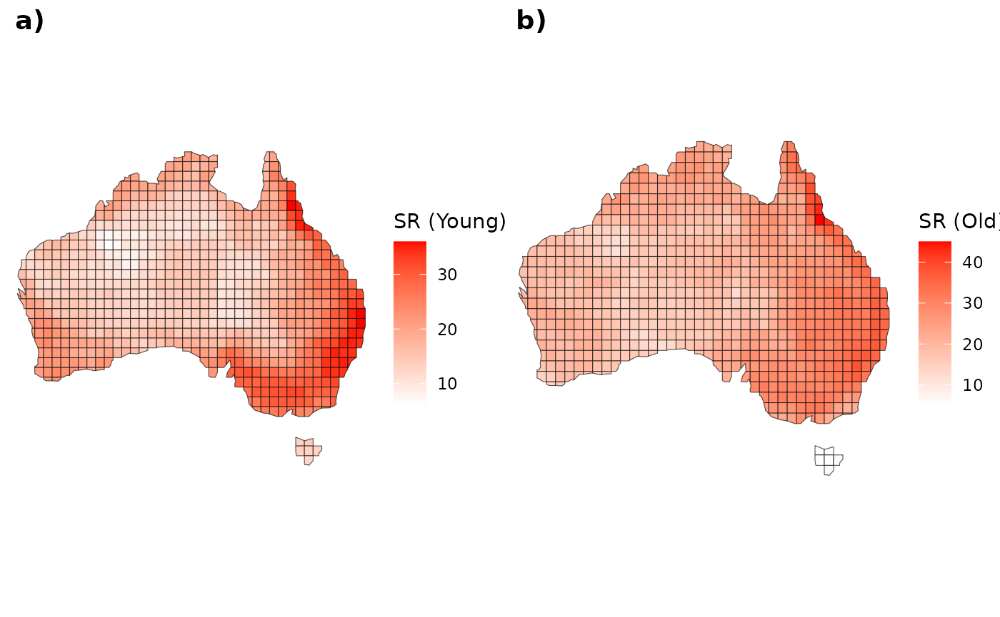
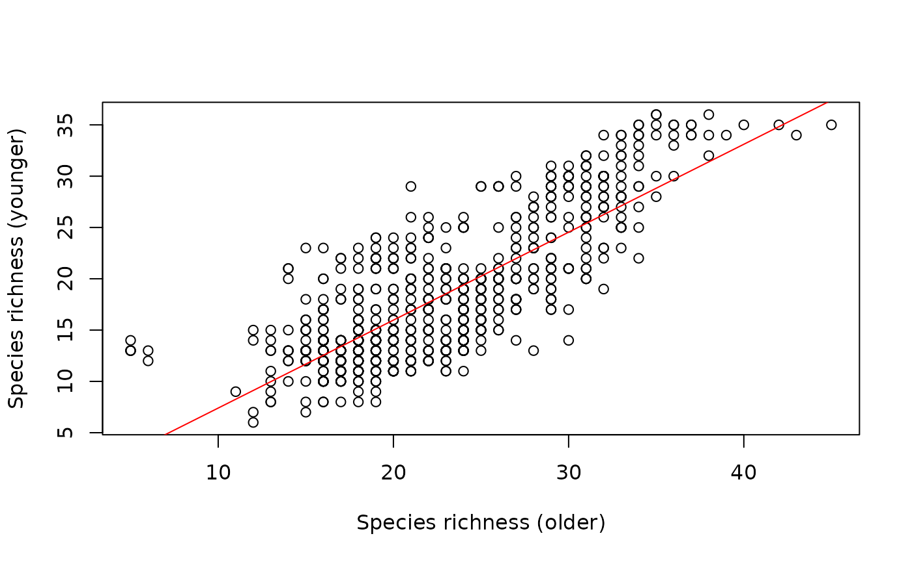
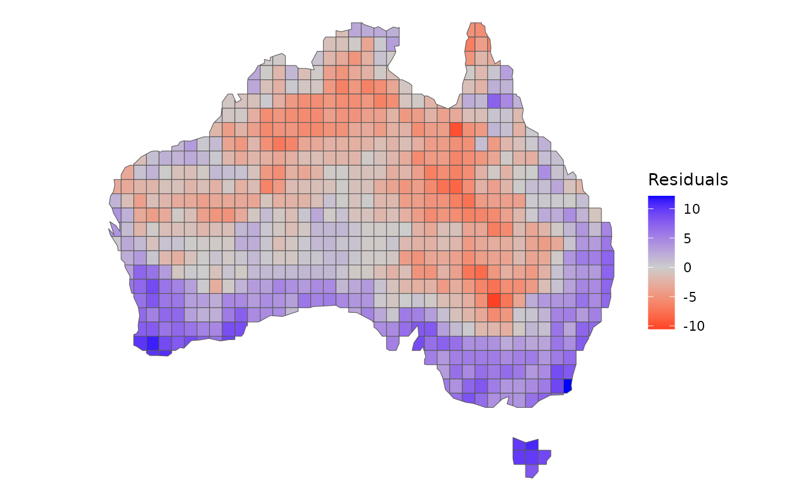

Passerines Distribution
Source:vignettes/Passeriformes-distribution.Rmd
Passeriformes-distribution.RmdThis article aims to map the species richness distributions of older
and young lineages of Australian passerines (obtained from Jetz et al. (2012)).
Using the treesliceR tools, we’ll compare the spatial
distribution between these lineages and explore emergent biodiversity
patterns in space.
Before starting our analysis, we’ll need to load the
ape, ggplot2, and ggpubr
packages. Additionally, if required, install the devtools
before downloading the treesliceR package from GitHub:
Now, we’ll need to load (and install if necessary) the
treesliceR package:
# Loading it
library(treesliceR)1. Pruning the passerines phylogeny
Before conducting our analysis, it is necessary to load the
passerines’ phylogeny. We will call the pass_trees object,
which is accessible from the treesliceR package. This
object comprises 100 passerine phylogenies, but for the sake of
simplicity we will use only the first one:
tree <- pass_trees[[1]]To evaluate the species richness distribution of both older and
younger lineages, it is essential to split the phylogenetic tree of
these lineages based on a specific criterion. Therefore, we will
categorize lineages as older species if their last branching events are
higher than the 75th quantile of the overall passerines age
distribution. This can be done by using the prune_tips()
function:
older <- prune_tips(tree, 0.75, qtl = T)Now, we will classify lineages as younger if their ages are smaller
than the 25th quantile of the overall passerine ages. However, because
we aim to keep in the phylogeny those species originating after
our quantile threshold, we will set the argument method = 2
(for more details, see ?prune_tips()):
younger <- prune_tips(tree, 0.25, qtl = T, method = 2)Let’s visualize both the original and pruned phylogenies:
oldpar <- par(mfrow = c(1, 3)) # Setting an 1x3 graphical display
plot(tree, main = "All species", show.tip.label = F); axisPhylo()
plot(older, main = "Older species", show.tip.label = F); axisPhylo()
plot(younger, main = "Younger species", show.tip.label = F); axisPhylo()
par(oldpar) # Returning to the original display2. Distribution of species richness (older vs younger)
Before calculating the species richness in each one of our categories (young and old lineages), we need to identify the older and younger species present in the pruned phylogenies:
older <- older$tip.label
younger <- younger$tip.labelNow, we need to evaluate the distribution of these species. To do
this, we’ll load the passerines species occurrence matrix in the
pass_mat object. Let’s take a look at the first tree
species in the matrix:
head(pass_mat[, 1:3])
#> Heteromyias_albispecularis Myzomela_obscura Taeniopygia_guttata
#> 1 0 1 0
#> 2 0 1 0
#> 3 0 1 0
#> 4 0 1 0
#> 5 0 1 0
#> 6 0 1 0Then, we can create subsets of this matrix for both older and younger species. Let’s begin with the older ones:
Now, let’s proceed by subsetting assemblages that contain the younger species:
Now, we can load a grid map of Australia and merge species richness information from young and old species onto it:
Then, visualize the species richness patterns in both categories:
# Younger
AU_yng <- ggplot() +
geom_sf(data = grid, aes(fill = SR_yng)) +
scale_fill_gradient(low = "white", high = "red") +
labs(fill = "SR (Young)") +
theme_void()
# Older
AU_old <- ggplot() +
geom_sf(data = grid, aes(fill = SR_old)) +
scale_fill_gradient(low = "white", high = "red") +
labs(fill = "SR (Old)") +
theme_void()
# Plotting
ggarrange(AU_yng, AU_old, labels = c("a)", "b)"), ncol = 2, nrow = 1)
3. Mismatches in species richness distribution
As observed above, there is a spatial correspondence between the species richness of younger and older lineages. However, the extent of is this relationship is uncertain. Let’s fit a simple linear regression to quantify this relationship:
model <- lm(SR_yng ~ SR_old, data = grid)Now, let’s examine the summarized results:
summary(model)
#>
#> Call:
#> lm(formula = SR_yng ~ SR_old, data = grid)
#>
#> Residuals:
#> Min 1Q Median 3Q Max
#> -10.5402 -2.8631 -0.4006 2.6029 12.1718
#>
#> Coefficients:
#> Estimate Std. Error t value Pr(>|t|)
#> (Intercept) -1.16669 0.56283 -2.073 0.0385 *
#> SR_old 0.85690 0.02403 35.658 <2e-16 ***
#> ---
#> Signif. codes: 0 '***' 0.001 '**' 0.01 '*' 0.05 '.' 0.1 ' ' 1
#>
#> Residual standard error: 3.999 on 718 degrees of freedom
#> Multiple R-squared: 0.6391, Adjusted R-squared: 0.6386
#> F-statistic: 1271 on 1 and 718 DF, p-value: < 2.2e-16Note that its coefficient of determination is high and significant (R² = 63%!!!!). Thus, areas with high richness of younger lineages will generally also exhibit high richness of older lineages. These areas could indicate different dynamics of diversification rates over time, concurrently influencing the patterns of species richness of lineages of different depths.
Let’s dive a bit more into this example and examine a scatterplot depicting the species richness of both categories:
plot(SR_yng ~ SR_old, data = grid,
ylab = "Species richness (younger)",
xlab = "Species richness (older)")
# Regression line
abline(model, col = "red")
Despite the stronger relationship between the species richness of both young and old lineages, the deviations in these patterns could indicate important and unidentified biogeographical processes influencing the currently observed species richness of these lineages.
Therefore, let’s quantify the magnitude of these deviations from our
model using the residuals function and spatialize them:
grid$res <- residuals(model)
# Mapping it
ggplot() +
geom_sf(data = grid, aes(fill = res)) +
scale_fill_gradient2(low = "red", mid = "grey80", high = "blue") +
labs(fill = "Residuals") +
theme_void()
Areas in blue indicate a higher predominance of younger lineages than expected, while in red indicates that older lineages are predominant. Areas colored in grey indicate that the observed species richness of younger and older species are close to the richness expected by our model.
Using these residuals, we can possibly infer the processes leading to the differences between the species richness of older and younger lineages. Interestingly, these differences observed in the residuals are highly structured in space. There is a higher predominance of older lineages in deserts, which could be attributed to a processes of lower diversification rates within these locations over time. On the other hand, younger lineages predominate in humid areas and islands, indicating locations where diversification rates are higher and continually generate recent lineages. It is worth to mention that both mechanisms mentioned here are only hypotheses that deserves further empirical testing.
That’s all folks!
References and related research
Hawkins, B. A., Diniz‐Filho, J. A. F., Jaramillo, C. A, and Soeller, S. A. 2007. Climate, Niche Conservatism, and the Global Bird Diversity Gradient. - The American Naturalist 170(S2): S16–S27. https://doi.org/10.1086/519009
Jetz, W., Thomas, G. H., Joy, J. B., Hartmann, K. and Mooers, A. O. 2012. The global diversity of birds in space and time. - Nature 491(7424): 444–448. https://doi.org/10.1038/nature11631
Sonne, J., Dalsgaard, B., Borregaard, M. K., Kennedy, J., Fjeldså, J. and Rahbek, C. 2022. Biodiversity cradles and museums segregating within hotspots of endemism. - Proceedings of Royal Society: B. 289: 20221102. https://doi.org/10.1098/rspb.2022.1102